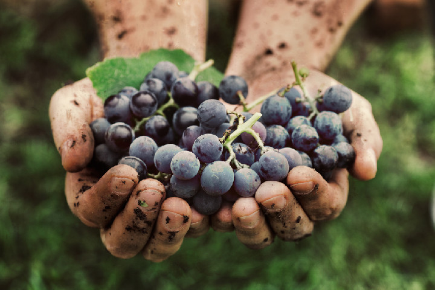

Szőlész Borász Képzés - 2025
Röviden a borászatról:
Élelmiszeripar ágazat képzése, amely szakképzettség megszerzésével zárul. A borászat Magyarországon az egyik legrégebbi és legjobban megbecsült tevékenység. A szőlész-borász ismeretei kiterjednek a szőlő termesztésére, művelésére, a szüretre, a szőlőfajták feldolgozására, a borkészítés műveleteire és a bor értékesítésére. A jó minőségű bor előállítása nagyon összetett ismereteket igénylő munka. A borászatok Magyarországon sokszor családi környezetben működnek, ahol a szőlész-borász szakma tradíció. A jó szőlész-borász szakember tudása a borászatokban nagy kincs.
Ajánlott azoknak a fiataloknak, akik érdeklődnek a szőlő termesztése, feldolgozása és a bor készítése iránt, akik elkötelezettek a jó minőségű, méltán híres magyar borok készítése és jó hírnék fenntartása, emelése iránt.
Kompetenciaelvárás:
Megbízhatóság, állóképesség, kezdeményezőképesség, színlátás, ízérzékelés
Legyél te is borász!
Érdekel a borkészítés? Talán már értesz is hozzá? Teszteld le tudásod vagy szerezz újakat! A kezdjük! gomb végig kísér a borkészítés alapkövein, hogy TE is remek borász legyél.